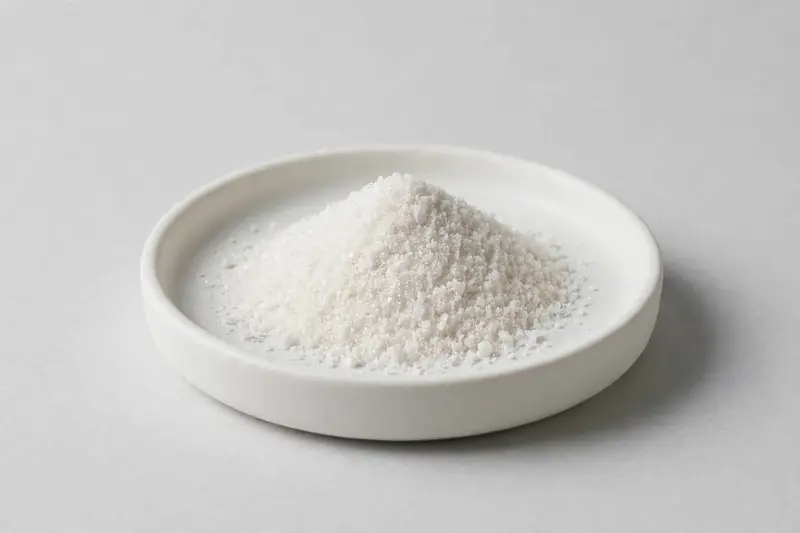

A stilbenoid offered for longevity and antioxidant formulation positioning.

Overview
Pterostilbene Powder is a stilbenoid supplied at high purity and positioned in longevity and antioxidant-oriented supplement concepts, frequently alongside resveratrol and similar actives. Buyers typically work to a defined purity and impurity profile. Sourcing runs through vetted partner producers, and we confirm purity grade, source route and testing scope against your target specification.
Specifications below reflect commonly requested options in the market — not a stock list. Share your target spec and we'll confirm exactly what we can supply, honestly.
| Specification | Details |
|---|---|
| Botanical identity | Pterostilbene (stilbenoid), isolated |
| Marker compound | Pterostilbene — commonly requested: 98–99% (HPLC) |
| Appearance | Off-white to white fine powder |
| Mesh size | Typically 80–100 mesh (confirm per inquiry) |
| Testing | COA/TDS arranged on request; scope agreed per your spec |
Applications
Documentation
We don't claim in-house labs or certifications we don't hold. COA and TDS documents can be arranged on request, and testing scope is agreed against your specification before supply.
FAQ
Related products
Camellia sinensis
Key marker: EGCG / Polyphenols
View specs →Serenoa repens
Key marker: Fatty Acids
View specs →Echinacea purpurea
Key marker: Echinacoside
View specs →Lycopene (carotenoid, tomato-derived)
Key marker: Lycopene
View specs →Chlorella vulgaris
Key marker: Protein / Chlorophyll
View specs →Send your target spec and volumes — we'll respond with a tailored quotation.
Request a Quote